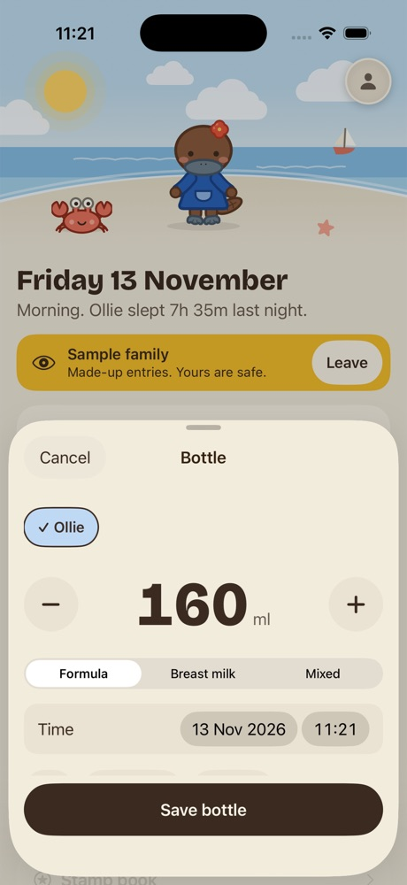
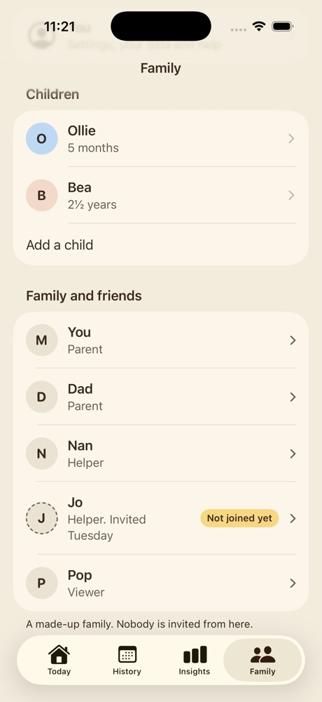
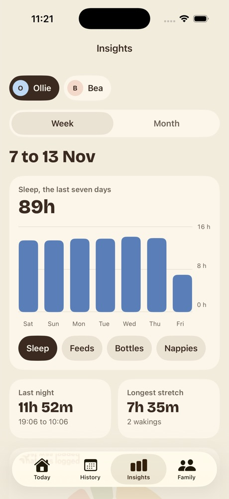
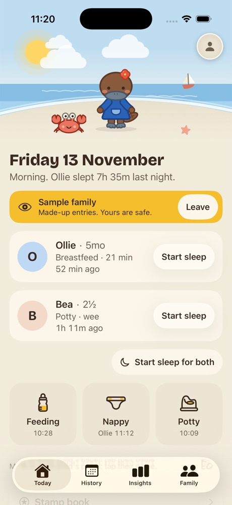

A more visual first run
Second pass. Puggle now waves, nods and celebrates inside her scenes, and she stays in view beside the device frames. Every scene, move and screen is a real picture from the app. Nothing is built.
The welcome screen
The first pass had the scene (A) and her wave on a plain page (B) as separate options. These put the two together.
1. The scene, with her waving in it
The whole top is her world, she waves from the middle of it, and the name sits in the sky. This is the first pass's A and B put together: her wave is now inside the scene and no longer on a plain page.
2. Scene above, name below
The same wave in a shorter scene, with the name and its line centred underneath as in B. Calmer, and the name is easier to read.
3. The same, opened at night
Option 1 after dark: the scene follows the real time of day, so a parent at three in the morning gets the moonlit one.
A day with Puggle
Four pages to swipe, in place of today's two pages of text. The scene moves from dawn to night, one real screen sits in a device frame, and Puggle stands beside it where the first pass hid her behind it. Skip is on every page.

Dawn: logging
She waves on the first page.

Day: together
She nods beside the Family tab.

Dusk: looking back
A week of sleep in Insights.

Night: calm
In the app this frame would show the night look itself.
The questions, and the finish
The picture stays through setup, and the last page celebrates.
A strip of scene over each question
She nods when a name is typed. Small enough to leave room for the keyboard.
You're set
Her real celebrate move in the scene, once, then Today opens.
The line under the name
Unchanged from the first pass. The mockups above use my pick.
Baby tracker for the whole family
Leads with the words people search for, then says what is different: everyone logs together.
Baby and family tracker
What the welcome screen says today. Short, but "family tracker" can read as location tracking.
Feeds, sleeps and nappies, together
Warmer and more concrete, but it drops the words "baby tracker", which is what people type.
On the App Store
| Field | Suggestion | Why |
|---|---|---|
| Name (30 characters) | Puggle: Baby Tracker | Words in the name count most in search. |
| Subtitle (30 characters) | Feeds, sleeps, nappies, potty | The next most searched words, without repeating the name. |
| US store | "diapers" in place of "nappies" | The subtitle can differ by country. |
I have not checked that the name is free on the App Store, or how much each phrase is searched.
Things to know
- Her moves here are the real ones, played on a loop with a pause. In the app each plays once, when the page appears.
- The scenes are stills. In the app the clouds, animals, kite and balloon move, and the weather can be real.
- The screens in the frames would be drawn by the app itself, with the sample family, so they never go out of date and follow dark mode and text size.
- Reduce Motion gets still pictures throughout.
- Two more screens than today, all skippable. The questions do not change, so saving and sync are not touched.